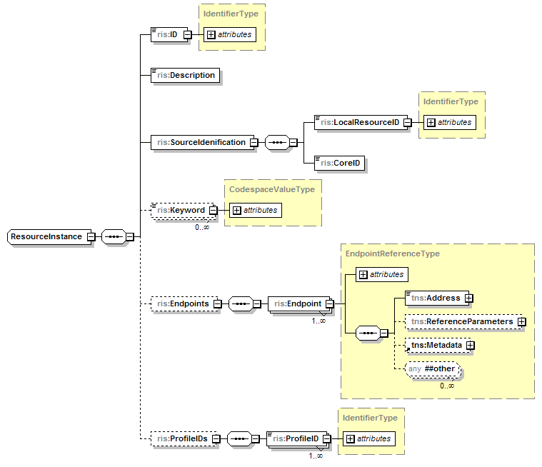

com.saic.uicds.core.infrastructure.endpoint.ResourceInstanceServiceEndpoint
com.saic.uicds.core.infrastructure.endpoint.ResourceInstanceServiceEndpoint
|
||||||||||
| PREV CLASS NEXT CLASS | FRAMES NO FRAMES | |||||||||
| SUMMARY: NESTED | FIELD | CONSTR | METHOD | DETAIL: FIELD | CONSTR | METHOD | |||||||||
java.lang.Object
@Endpoint @Transactional public class ResourceInstanceServiceEndpoint
The UICDS Resource Instance service provides a means to create, discover, update, and remove
UICDS resource instances. A UICDS resource instance represents a resource that is capable of
receiving notifications as described in
NotificationServiceEndpoint. The notification
interests for a resource instance are expressed as resource profiles which represent a role that
the resource instance fulfills with respect to a particular Interest Group (i.e. incident).
A Resource Instance is defined as the following data structure:

Each UICDS resource instance is represented within UICDS by an identifier which is unique across UICDS cores and has the following form:
instanceID@coreID where
The SourceIdentification element contains a LocalResouceID that can be used to store an application or locality specific identification string. The coreID value will be set to the core where this resource instance was created.
The Keywords element can contain any codespace, code, value triples that the creator would like to store with the resource instance. A particular NIMS resource typing set of triples for the actual typing of the resource is an example.
The Endpoints element contains references to endpoints associated with this resource instance.
Currently the only endpoint that may be associated with a resource instance is its notification
endpoint. See the NotificationServiceEndpoint
for more details.
The ProfileIDs element will contain a list of the Resource Profiles that have been applied to this resource instance if any. Profiles get applied to application-type resource instances when they register with this service or to individual resource instances when a domain service applies a resource profile to the resource instance. For example, in the EM domain the ICS service would apply profiles to individual resources when they are assigned a role in the ICS.
Known Issues
NotificationServiceEndpoint,
ResourceProfileServiceEndpoint| Field Summary |
|---|
| Fields inherited from interface com.saic.uicds.core.infrastructure.util.ServiceNamespaces |
|---|
NS_AgreementService, NS_AlertService, NS_BroadcastService, NS_DirectoryService, NS_IAPService, NS_Incident, NS_IncidentCommandStructureService, NS_IncidentManagementService, NS_InterestGroupService, NS_LEITSCService, NS_LoggingService, NS_MapService, NS_NotificationService, NS_OasisCAP, NS_ProfileService, NS_ResourceInstanceService, NS_ResourceManagementService, NS_ResourceProfileService, NS_SensorService, NS_TaskingService, NS_WorkProductService |
| Constructor Summary | |
|---|---|
ResourceInstanceServiceEndpoint()
|
|
| Method Summary | |
|---|---|
org.uicds.resourceInstanceService.CheckinResponseDocument |
checkin(org.uicds.resourceInstanceService.CheckinRequestDocument requestDoc)
Check in a particular resource instance. |
org.uicds.resourceInstanceService.CheckoutResponseDocument |
checkout(org.uicds.resourceInstanceService.CheckoutRequestDocument requestDoc)
Check out a resource instance. |
org.uicds.resourceInstanceService.GetResourceInstanceResponseDocument |
getResourceInstance(org.uicds.resourceInstanceService.GetResourceInstanceRequestDocument requestDoc)
Get a specific resource instance. |
org.uicds.resourceInstanceService.GetResourceInstanceListResponseDocument |
getResourceInstanceList(org.uicds.resourceInstanceService.GetResourceInstanceListRequestDocument requestDoc)
Get a list of the current resource instances. |
org.uicds.resourceInstanceService.RegisterResponseDocument |
register(org.uicds.resourceInstanceService.RegisterRequestDocument requestDoc)
Register an application as a resource instance. |
org.uicds.resourceInstanceService.UnregisterResponseDocument |
unregister(org.uicds.resourceInstanceService.UnregisterRequestDocument requestDoc)
Unregister an application as a resource instance. |
org.uicds.resourceInstanceService.UpdateEndpointResponseDocument |
updateEndpoint(org.uicds.resourceInstanceService.UpdateEndpointRequestDocument requestDoc)
Update the endpoint for this resource instance. |
| Methods inherited from class java.lang.Object |
|---|
clone, equals, finalize, getClass, hashCode, notify, notifyAll, toString, wait, wait, wait |
| Constructor Detail |
|---|
public ResourceInstanceServiceEndpoint()
| Method Detail |
|---|
@PayloadRoot(namespace="http://uicds.org/ResourceInstanceService",
localPart="CheckinRequest")
public org.uicds.resourceInstanceService.CheckinResponseDocument checkin(org.uicds.resourceInstanceService.CheckinRequestDocument requestDoc)
CheckinRequestDocument -
@PayloadRoot(namespace="http://uicds.org/ResourceInstanceService",
localPart="RegisterRequest")
public org.uicds.resourceInstanceService.RegisterResponseDocument register(org.uicds.resourceInstanceService.RegisterRequestDocument requestDoc)
throws com.saic.uicds.core.infrastructure.exceptions.ResourceProfileDoesNotExist
RegisterRequestDocument -
com.saic.uicds.core.infrastructure.exceptions.ResourceProfileDoesNotExist
@PayloadRoot(namespace="http://uicds.org/ResourceInstanceService",
localPart="UnregisterRequest")
public org.uicds.resourceInstanceService.UnregisterResponseDocument unregister(org.uicds.resourceInstanceService.UnregisterRequestDocument requestDoc)
throws com.saic.uicds.core.infrastructure.exceptions.ResourceInstanceDoesNotExist
RegisterRequestDocument -
com.saic.uicds.core.infrastructure.exceptions.ResourceInstanceDoesNotExist
@PayloadRoot(namespace="http://uicds.org/ResourceInstanceService",
localPart="CheckoutRequest")
public org.uicds.resourceInstanceService.CheckoutResponseDocument checkout(org.uicds.resourceInstanceService.CheckoutRequestDocument requestDoc)
CheckoutRequestDocument -
@PayloadRoot(namespace="http://uicds.org/ResourceInstanceService",
localPart="GetResourceInstanceListRequest")
public org.uicds.resourceInstanceService.GetResourceInstanceListResponseDocument getResourceInstanceList(org.uicds.resourceInstanceService.GetResourceInstanceListRequestDocument requestDoc)
GetResourceInstanceListRequestDocument -
@PayloadRoot(namespace="http://uicds.org/ResourceInstanceService",
localPart="GetResourceInstanceRequest")
public org.uicds.resourceInstanceService.GetResourceInstanceResponseDocument getResourceInstance(org.uicds.resourceInstanceService.GetResourceInstanceRequestDocument requestDoc)
GetResourceInstanceRequestDocument -
@PayloadRoot(namespace="http://uicds.org/ResourceInstanceService",
localPart="UpdateEndpointRequest")
public org.uicds.resourceInstanceService.UpdateEndpointResponseDocument updateEndpoint(org.uicds.resourceInstanceService.UpdateEndpointRequestDocument requestDoc)
UpdateEndpointRequestDocument -
|
||||||||||
| PREV CLASS NEXT CLASS | FRAMES NO FRAMES | |||||||||
| SUMMARY: NESTED | FIELD | CONSTR | METHOD | DETAIL: FIELD | CONSTR | METHOD | |||||||||